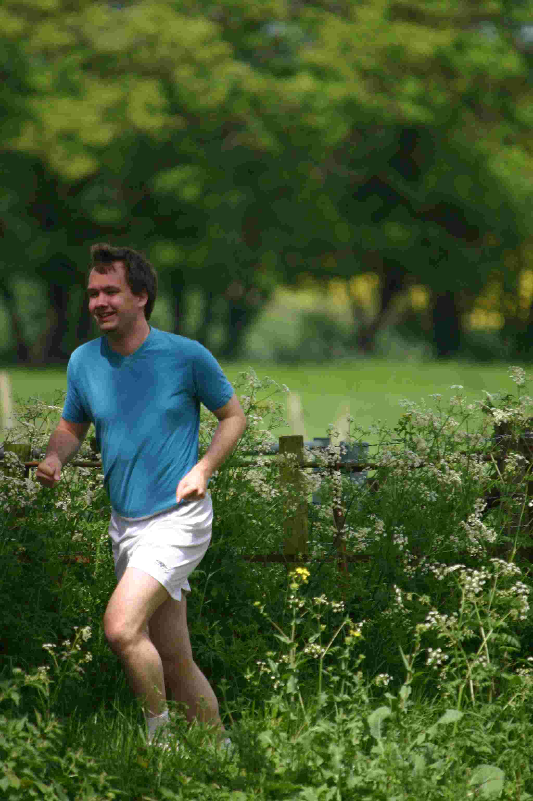
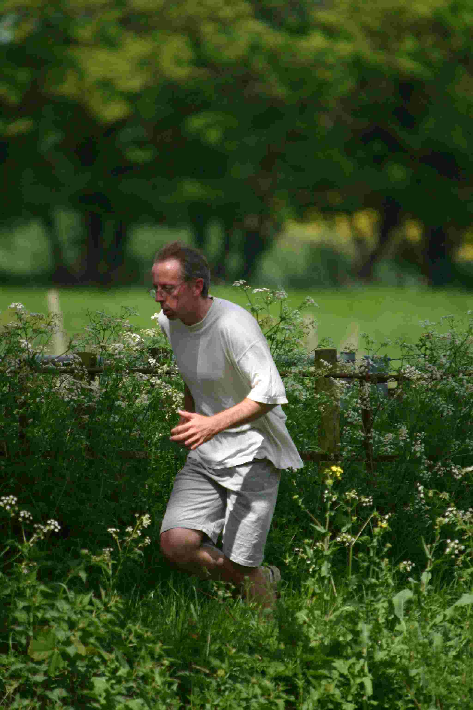
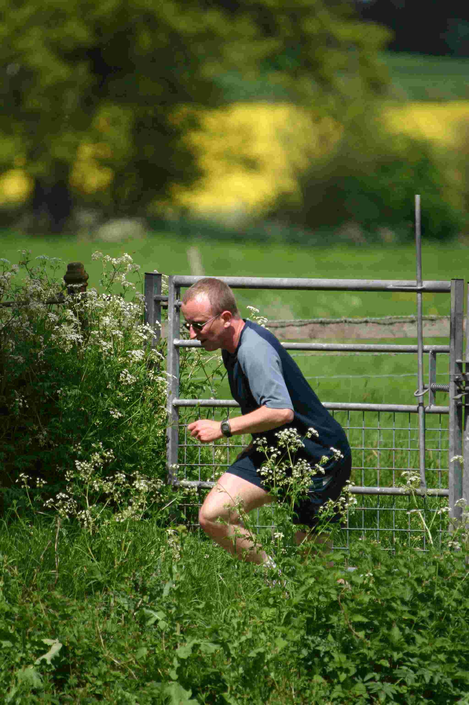
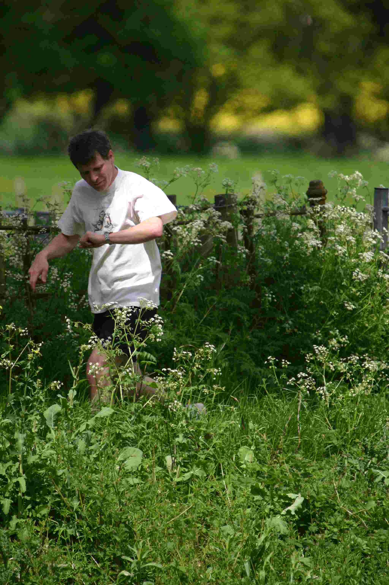
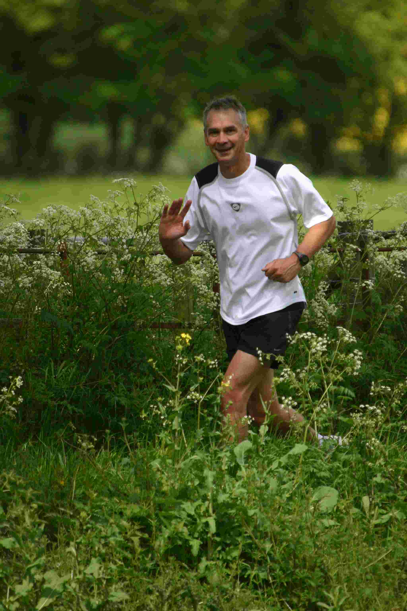
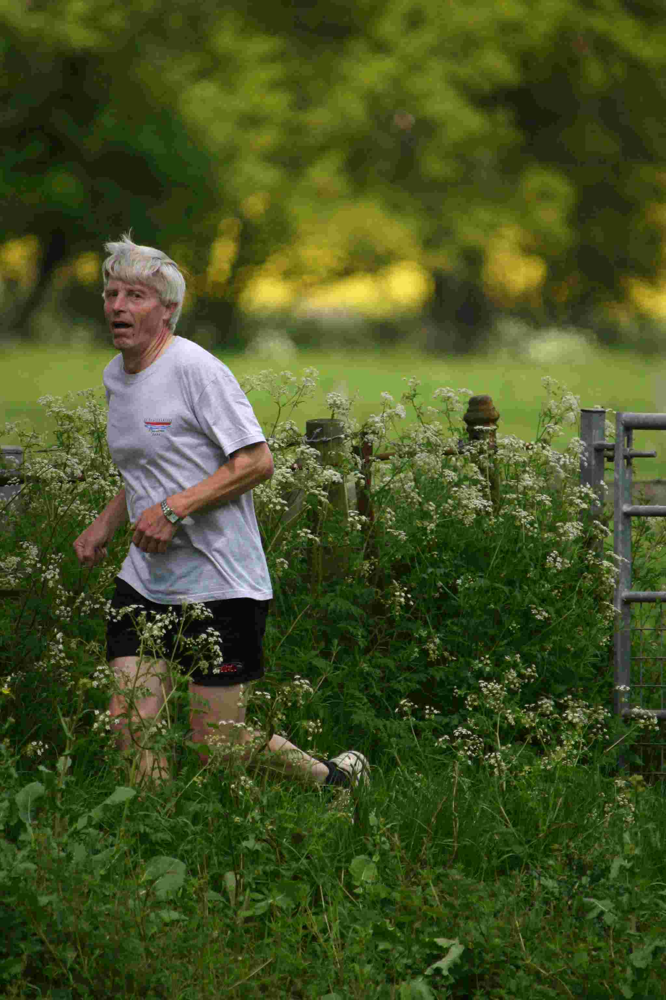

Home | Summer Course | Alternative Summer Course | Winter Course | Maps | All Races | Winter 2008 Trophies | Summer 2007 Trophies | Older Photos
HR Wallingford has retained the corporate title at the Waddesdon 5km Road Race.
The event is organised by the Vale of Aylesbury Athletic Club and is held in the grounds of Waddesdon Manor, near Aylesbury. The corporate prize is awarded to the first team to have four finishers, including one female. In 2005 the HR Wallingford team completed the course in 19:57, two minutes ahead of second place Royal Mail. This year our training paid off and the entire HR Wallingford team completed the course before any other corporate team had a single finisher! The 2006 team comprised members of both HRW and WS: Nigel Bunn (17:43), Tim Chesher (19:19), Wiki Daniels (19:40), Keiran Millard (19:52 ), Richard Bridge (21:20), Andrew Nex (21:30) and Jim Stevenson (25:25). Extra congratulations go to Wiki for securing second prize in the Senior Women category and Jim for coming out of retirement to race for HR Wallingford. Click here for a full list of results
2006 Results (position's in brackets)
1st - HR Wallingford (15,45,50,54)
2nd - Martin, Nye & Co. (67,101,176,222)
3rd - WSP (82,154,172,177)
4th - Fetcheveryone (64,135,206,228)
5th - Running Riot (159,195,220,306)
6th - Pace Components (183,207,270,323)
7th - High Wycombe Hash House Harriers (272,287,313,314)
8th - RSPCA (282,283,305,319).
Wiki came 2nd lady (an improvement on last year where she was 3rd lady).
Becky... a rare sight
Antony... seems ok
Roger (not sure I remember him)
Andrew negotiates the half-way gate
Mark makes a time check
John... seems quite happy
Roger, obviously enjoying himself